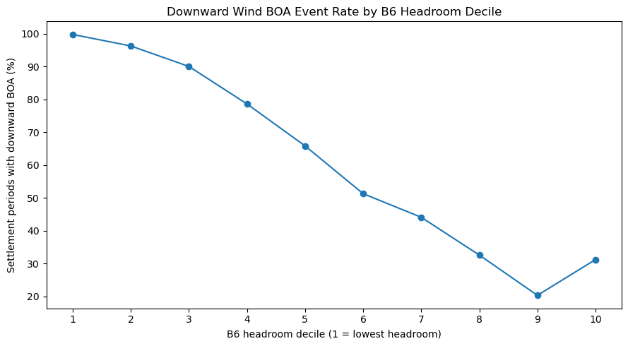
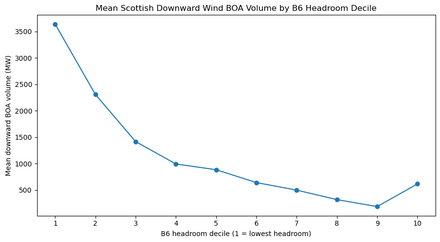
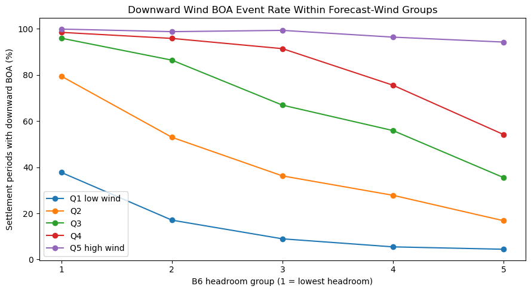

B6 Transmission Headroom & Scottish Wind Balancing#
Question: Does day-ahead B6 headroom improve prediction of later downward Balancing Mechanism activity on Scottish wind units?
This started with a simple question. Scotland has a large share of Britain’s wind generation, while much of electricity demand sits further south. When wind output is high, the network has to move more power south. I wanted to know whether the day-ahead information NESO publishes for the B6 boundary tells us anything useful before delivery, rather than only helping explain balancing actions afterwards.
I treat B6 as a predictor, not a causal label. The Balancing Mechanism data show which downward wind actions occurred, but they do not say which transmission boundary caused each action.
At a glance#
Result |
Value |
|---|---|
B6 + Scottish wind BOA sample |
42,332 settlement periods |
Verified-wind modelling sample |
31,532 settlement periods |
Event-model ROC AUC |
0.817 → 0.862 |
Combined-model MAE |
899.8 → 860.1 MW |
Combined-model R² |
0.47 → 0.50 |
Main finding: B6 headroom is most useful for predicting whether downward Scottish wind activity occurs. It adds much less when the task changes to estimating the exact size of the action.
Building the sample#
The starting NESO constraint file contains 728,529 observations across 31 constraint groups. I isolate the SCOTEX/B6 group, remove 96 exact duplicates, preserve legitimate repeated clock times on autumn daylight-saving days, and align the boundary data to Scottish wind BOAs, demand forecasts and wind forecasts by settlement date and settlement period.
The biggest break in the data is 22 April 2024. NESO changed the published day-ahead flow methodology on that date, and the distribution of B6 headroom changes sharply around it. I keep the earlier data for validation but start the main analysis after the methodology change instead of treating the two regimes as directly comparable.
The final descriptive sample contains 42,332 settlement periods across 882 days. The predictive sample is smaller because I only use wind-forecast dates where the publication timing can be verified as preceding delivery.
Sample |
Periods |
Days |
Use |
|---|---|---|---|
B6 + Scottish wind BOA |
42,332 |
882 |
Descriptive analysis |
Verified-wind sample |
31,532 |
657 |
Predictive modelling |
Measuring B6 headroom#
For settlement period (t), I define headroom as
where \(L_t^{B6}\) is the published B6 transfer limit and \(F_t^{B6}\) is the corresponding forecast flow.
Lower headroom means forecast flow is closer to the published limit. Negative headroom means the published forecast flow is above the published limit in that direction. I do not treat that as proof of a realised physical overload.
Across the post-change sample, median headroom is about 1.0 GW and roughly one third of settlement periods have negative headroom.

A clear raw pattern appears at low headroom#
Before adding any controls, I split the sample into B6-headroom deciles. The lowest-headroom periods have much more downward wind activity than most of the higher-headroom groups.
Headroom decile |
Downward BOA event rate |
Mean downward BOA |
|---|---|---|
1, lowest headroom |
99.8% |
3,638 MW |
2 |
96.3% |
2,308 MW |
3 |
90.1% |
1,417 MW |
4 |
78.6% |
994 MW |
5 |
65.9% |
885 MW |
6 |
51.3% |
643 MW |
7 |
44.1% |
500 MW |
8 |
32.6% |
320 MW |
9 |
20.4% |
189 MW |
10, highest headroom |
31.2% |
617 MW |


The rebound in decile 10 is important rather than something to hide. That group contains unusual high-limit states, including a published 10,000 MW B6 limit, as well as periods where forecast flow is in the opposite direction. I keep those observations in the main sample and test them separately later.
Wind is the main confounder#
High forecast wind can both tighten the north-south transfer position and increase the amount of Scottish wind available to be turned down. The raw B6 relationship therefore cannot be interpreted on its own.
Within the verified-wind sample:
Relationship |
Correlation |
|---|---|
Forecast wind vs B6 headroom |
-0.508 |
Forecast wind vs downward BOA volume |
+0.742 |
Forecast wind vs event occurrence |
+0.583 |
Demand forecast vs event occurrence |
-0.029 |
Residual demand vs event occurrence |
-0.405 |
I then compare B6 headroom within forecast-wind quintiles. The pattern survives through the first four wind groups: event frequency generally falls as headroom rises. In the highest-wind group, downward activity is already present in roughly 94–100% of periods, so there is very little event variation left for B6 to separate.

Predictive test#
The main modelling question is narrower than the descriptive analysis:
Does B6 headroom improve prediction after forecast wind, forecast demand and calendar conditions are already in the model?
I split the modelling sample chronologically. The earlier 25,198 periods are used for model development and the later 6,334 periods, from 7 October 2025 to 23 April 2026, are used for evaluation. The event rate rises from about 59% in the earlier sample to 69% later, so this is not a stationary random train-test split.
The later period was inspected during development, so I call it an evaluation period, not an untouched confirmatory test set.
Event occurrence#
I compare two logistic models:
M0: forecast wind + forecast demand + calendar variables
M1: the same controls + B6 headroom
Model |
ROC AUC |
Average precision |
Brier score |
Log loss |
|---|---|---|---|---|
Controls only |
0.817 |
0.909 |
0.172 |
0.530 |
Controls + B6 headroom |
0.862 |
0.936 |
0.149 |
0.475 |
Forecast wind, demand and timing already explain a lot. B6 still improves every reported event metric, with the clearest change in ROC AUC from 0.817 to 0.862.
Probability calibration#
Because the event probability is later multiplied by a conditional volume forecast, the probability level matters as well as ranking. I fit the event model on an earlier block, use a separate chronological calibration block for Platt scaling, and leave the later evaluation period outside both.
For the B6 model, calibration reduces the Brier score from about 0.150 to 0.142 and log loss from 0.475 to 0.436 while leaving ROC AUC and average precision essentially unchanged.

Predicting the size of an action is harder#
The second stage models downward BOA volume only when activity is positive. The outcome is positive and right-skewed, so I use Gamma regression with a log link.
A simple linear B6 term does not improve the magnitude model. On the later evaluation period, MAE rises from 1,011 MW to 1,045 MW and R² falls from 0.350 to 0.272.
I therefore compare nonlinear B6 specifications on a separate internal chronological validation block before returning to the later evaluation period. A cubic B6 spline plus an indicator for the 10,000 MW limit state performs best of the candidates, but the gain is modest.
Positive-event magnitude model |
MAE |
RMSE |
R² |
Gamma deviance |
|---|---|---|---|---|
Controls only |
1,010.7 MW |
1,286.8 MW |
0.350 |
0.828 |
Nonlinear B6 |
996.5 MW |
1,282.3 MW |
0.354 |
0.799 |
This is the main distinction in the project: B6 is much more informative about whether downward activity occurs than about how large the eventual action will be.
Combined two-part forecast#
I combine the calibrated event probability with the conditional magnitude forecast:
Both the controls-only and B6 systems use the same chronological probability-calibration procedure.
Model |
MAE |
RMSE |
R² |
|---|---|---|---|
Controls only |
899.8 MW |
1,230.8 MW |
0.47 |
B6-enhanced |
860.1 MW |
1,192.9 MW |
0.50 |
The B6 version cuts MAE by about 4.4%. It is still biased high in the later period: mean observed downward BOA is about 1,549 MW, while the mean B6 forecast is about 1,780 MW. Better discrimination does not mean the level forecast is perfectly calibrated to the later operating regime.
Robustness checks#
I did not want the result to depend on one unusual data state or one exact definition of B6 stress.
Check |
Result |
|---|---|
Remove 10,000 MW observations from evaluation |
B6 MAE 860 MW vs controls 900 MW |
Remove 10,000 MW observations from fitting, calibration and evaluation |
B6 MAE 840 MW vs controls 893 MW; R² 0.51 vs 0.47 |
Replace continuous headroom with a negative-headroom flag |
ROC AUC 0.854 vs controls 0.817 |
Use continuous headroom |
ROC AUC 0.862, better than the binary flag |
Compare later months separately |
B6 has lower MAE in 6 of 7 represented months |
January 2026 is roughly neutral, with the B6 MAE about 0.5% higher. October and November contain relatively few verified-wind observations, so I would not place much weight on their month-level percentages.
What I think the result says#
The result is not that B6 explains Scottish wind balancing on its own. Wind, demand and calendar conditions already produce a strong baseline, and the Scottish network contains several interacting and nested constraints.
What B6 adds is a useful day-ahead signal about event occurrence. Its contribution to the exact size of the action is smaller, which makes sense in a system where final balancing volume can depend on several network conditions and operational decisions that are not represented by one boundary measure.
That is why I keep the conclusion predictive rather than causal.
Limitations#
The main limitations are:
the BOA data do not identify B6 as the cause of each individual wind action;
the wind forecast is system-level rather than a geographically detailed Scottish forecast;
B6 headroom uses published day-ahead flows and limits, not realised network flows;
the verified-wind modelling sample ends in April 2026 and covers a relatively recent operating regime;
the later evaluation period was inspected during development;
neighbouring settlement periods are serially related;
the models deliberately omit potentially useful drivers such as detailed generation location, interconnector conditions, outages on neighbouring boundaries and the full network state.
A genuinely prospective evaluation on future observations would be the next test I would want to run.